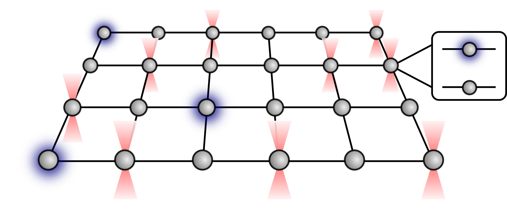
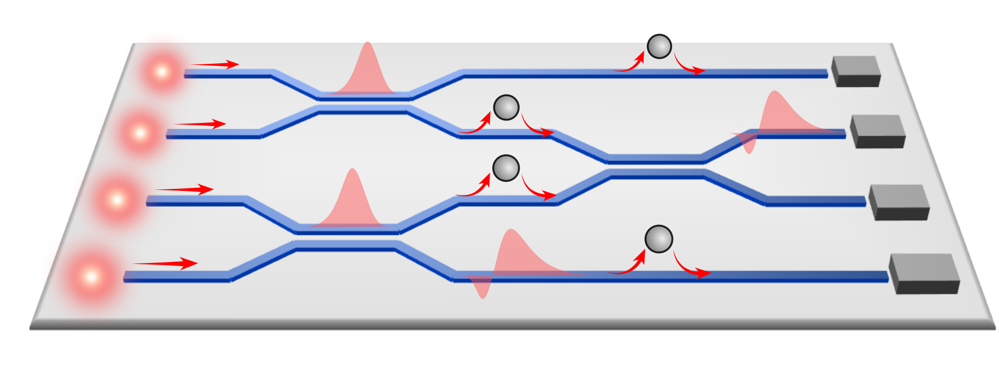
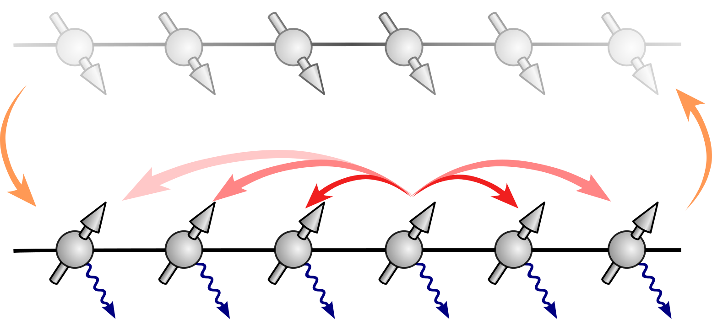
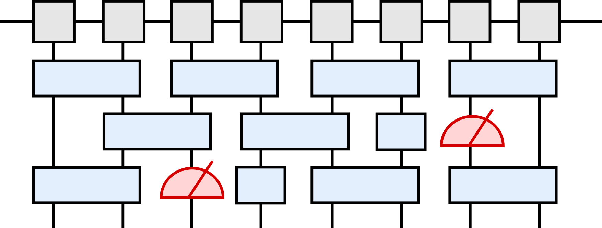

I am working at the interface of quantum optics, quantum information, and quantum many-body physics. My research focuses on light-matter interactions, strongly interacting atomic systems, and quantum simulation with Rydberg atoms.
My research interests include quantum optics, nanophotonics, cavity quantum electrodynamics, cold atoms, Rydberg atom arrays, and quantum many-body physics.

Rydberg atom arrays have emerged as one of the most promising quantum platforms. We are dedicated to developing novel schemes for new quantum simulation architectures, fast and robust quantum gate operations, as well as efficient error mitigations on this platform. We keep close collaborations with top experimental groups to implement our schemes.

Photons are ideal carriers for distributing quantum information, which, however, lacks intrinsic nonlinear interactions. The strong light-matter interactions can mediate effective interactions between photons. We are interested in developing theoretical tools for characterizing the strongly correlated multiphoton states and then harnessing them for efficient photonic quantum information processing.

Quantum dynamics, strongly correlated systems, Hilbert-space fragmentation, and nonequilibrium quantum phenomena.

We are interested in developing efficient scheme for studying quantum information.